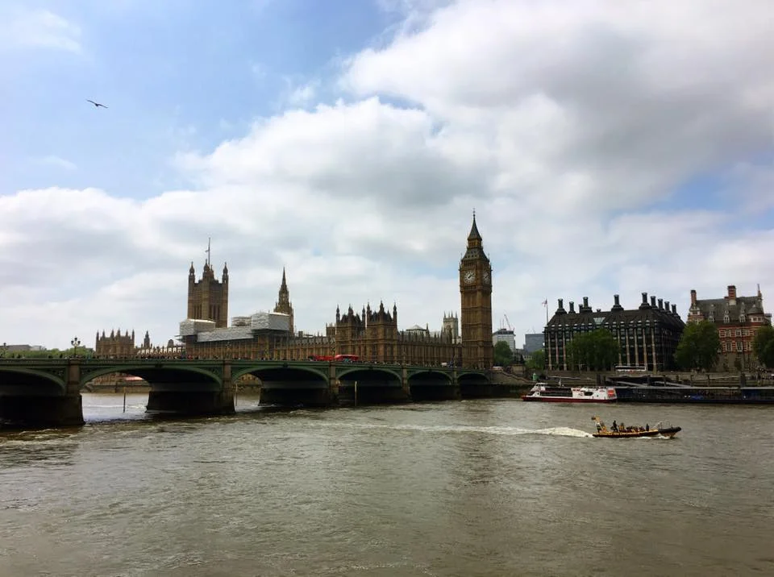
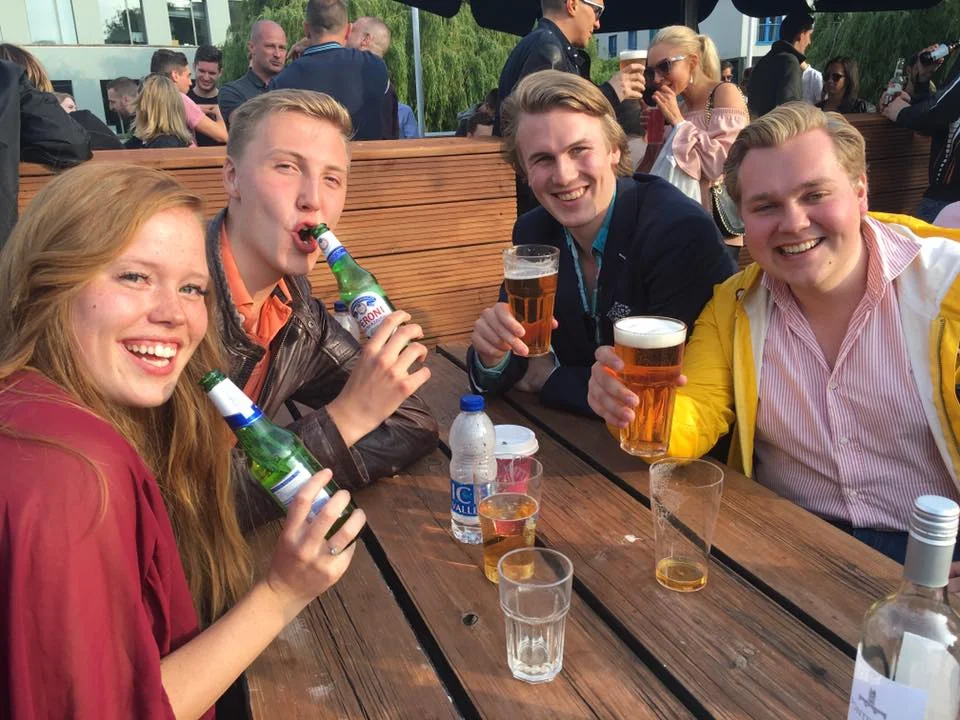
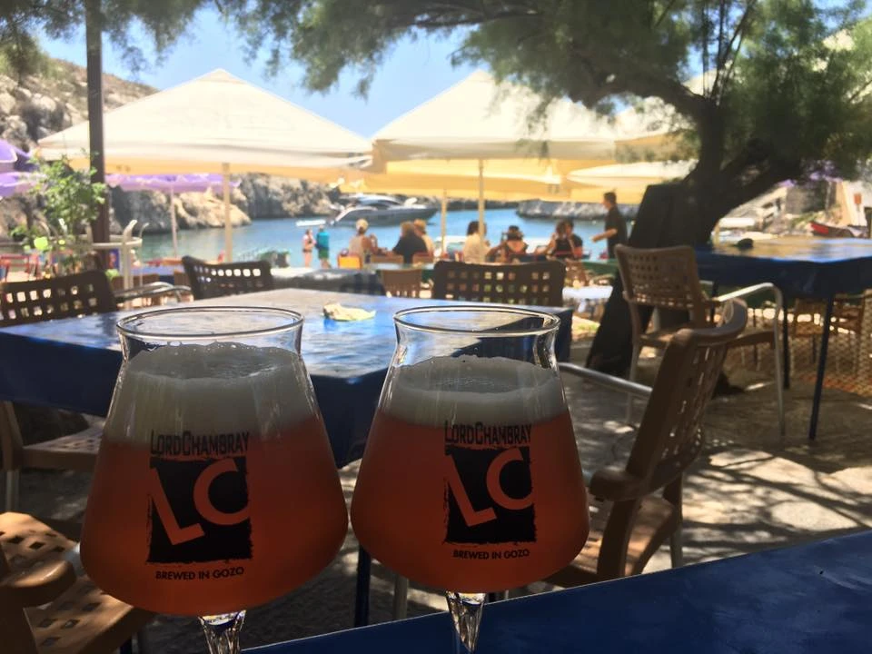
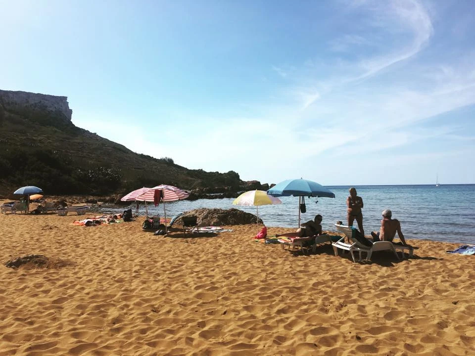

My Return To Malta
Earlier this year, I got a Facebook invite for a surprise birthday party in Malta. I'm sure when it was sent out nobody thought anyone from Canada would show up, since it's a really long way to go for a birthday. But as soon as I received the invite, I decided it would be really fun to show up, and also a chance to see a little more of Europe.

British Parliament
I left at the end of May and stopped briefly in London for a few days. I met up with my friend Barry, someone I recently met in Argentina back in February. We mostly just hung out around his area, watching football in the pubs. But one night we ventured to another part of town and set up for the afternoon on this rooftop pub.
During the day we encountered this really great group of people from Sweden, and spent most of the rest of the night hanging out with them. They were the first Swedes I had ever met, and we all felt they were a really amazing group of people. I'd love to get the opportunity to visit them someday in Sweden, but it probably won't happen for a few years.

Drinking with the Swedes
Once the festivities in London were over, I boarded a late night flight to Malta. Since it was a surprise birthday party for my friend Krisztina, her boyfriend had agreed to pick me up at the airport. Unfortunately I arrived too late for most pubs to be open, but Hardy and I managed to convince one bartender at the Funky Monkey to let us have two beers even though they were closing up.
Without a doubt, Malta was one of my favourite places I visited years ago. It is a really beautiful island right on the Mediterranean, and it certainly helps that I have a few friends there. So I was really excited to go back and visit it again.
Some people probably think it's a bit strange that I return to places I have visited before, given that there is so much still left to see. There's a passage in the movie "Night Train to Lisbon" that I quite like, and it sums up my feelings exactly with regards to visiting a place a second time:
We leave something of ourselves behind when we leave a place, we stay there, even though we go away. And there are things in us that we can find again only by going back there.
The birthday party was a resounding success, and my friend Krisztina was definitely surprised that I showed up (although her and I actually ran into each other the day before, I just kept walking and hoped she wouldn't actually think I was there, which worked!).
A few days later, Hardy and I did a road trip to Gozo, which is another little island beside Malta. The movie Popeye was filmed there, as is a large part of Game of Thrones. You have to take a little ferry over to the island, which presents a nice opportunity to have a few beers and soak up some rays. 
Beers in Gozo
We were only in Gozo for a few hours, so we mostly just drove around, occasionally stopping to take photos.
Rock Formation in Gozo
The beaches there were pretty incredible though, and I wish I would have had more time to explore. But all in all it was a great day trip, and I'm glad I got the chance to see it.

A Beach in Gozo
Unfortunately I only had about six days in Malta for this trip, and it went very fast. But I suspect I'll end up there again sometime, since it's such a beautiful place and it's always nice to catch up with old friends.